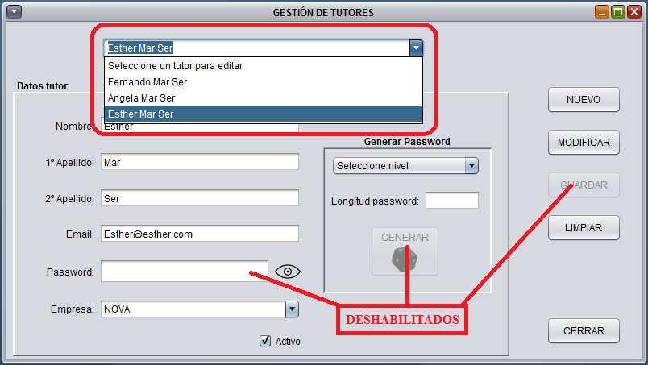
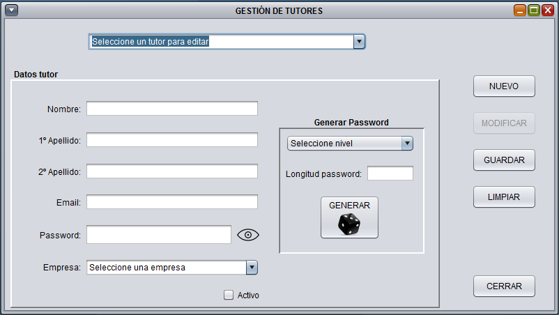

Desde esta ventana, podremos dar de alta un nuevo tutor o editar uno ya existente
Para editar un tutor existente, sólo deberemos seleccionarlo del desplegable y los datos del tutor se cargaran en sus respectivos campos. Igualmente se deshabilita la opción de generar un nuevo password. Todos los campos del tutor pueden ser modificados, salvo el password, es por ello que se deshabilita la opción de escribir en éste campo.

Para crear un nuevo tutor, sólo deberemos rellenar los campos del formulario. Como ayuda para crear el tutor, disponemos de un generador de password aleatorios con varios niveles de complejidad
